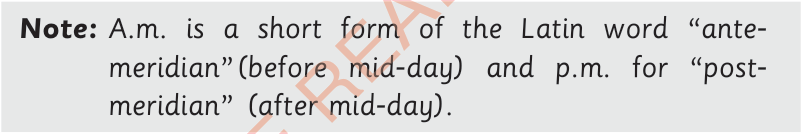
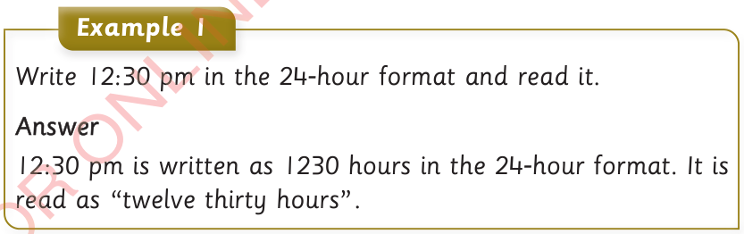
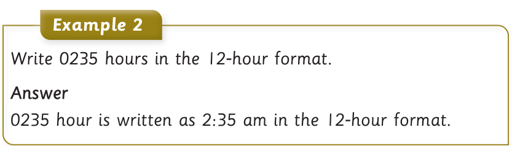

| 4:00 pm | 1600 |
| 5:00 pm | 1700 |
| 6:00 pm | 1800 |
| 7:00 pm | 1900 |
| 8:00 pm | 2000 |
| 9:00 pm | 2100 |
| 10:00 pm | 2200 |
| 11:00 pm | 2300 |
| 12:00 midnight | 0000 |

Note: A.m. is a short form of the Latin word “ante-meridian” (before mid-day) and p.m. for “post-meridian” (after mid-day).

Example 1
Write 12:30 pm in the 24-hour format and read it.
Answer
12:30 pm is written as 1230 hours in the 24-hour format. It is read as “twelve thirty hours”.

Example 2
Write 0235 hours in the 12-hour format.
Answer
0235 hour is written as 2:35 am in the 12-hour format.